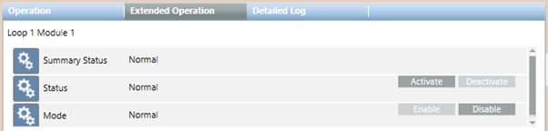

Notifier ID3000 Events
The following is the list of the events available in Desigo CC for the NOTIFIER ID3000 fire panel:
- Panel Communication Error
- Panel Alarm
- Panel PreAlarm
- Panel Evacuation
- Panel Fault
- Panel Network Fault
- Panel Exclusion
- Panel Sounders Activation
- Panel RT Alarm Transmission Disabled
- Panel Day Mode
- Panel Engineering Mode
- Zone Alarm
- Zone PreAlarm
- Zone Fault
- Zone Walktest
- Zone Partially Disabled
- Zone Exclusion
- Detector Alarm
- Detector PreAlarm
- Detector Fault
- Detector Test
- Detector Test Alarm
- Detector Test PreAlarm
- Detector Exclusion
- Module Active
- Module PreAlarm
- Module Fault
- Module Test
- Module Test Active
- Module Exclusion
Combined events
Because the ID3000 panel also supports combined Zone conditions (such as, Alarm + Part Disabled) the Desigo CC integration also provides combined event texts to cover these cases although not specified in the list above.
Analog values for modules
Analog values for modules are displayed in the Value property in the Operation tab. This property displays only when its value is different from zero.

An analog value is also available for detectors objects, if needed. By default, it is configured not to be displayed in any of the Display Levels. To display it, it is necessary to customize the detector object model and flag the DL levels for which the analog value must be displayed. It will then display when its value is different from zero.